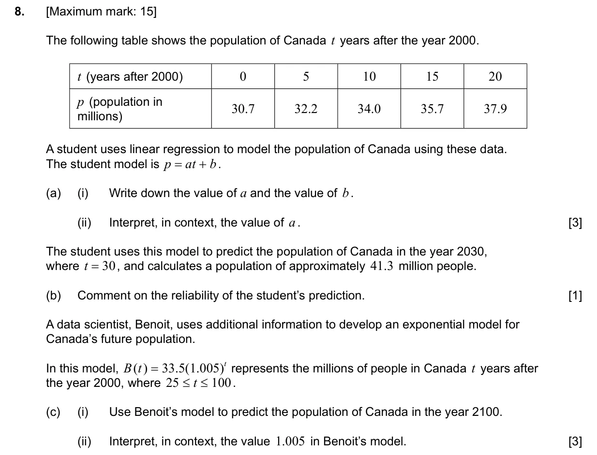
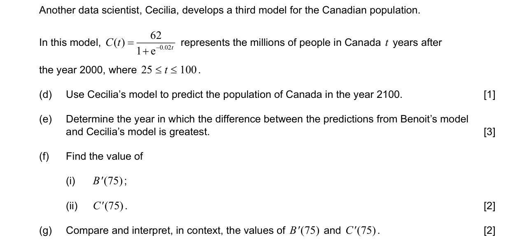
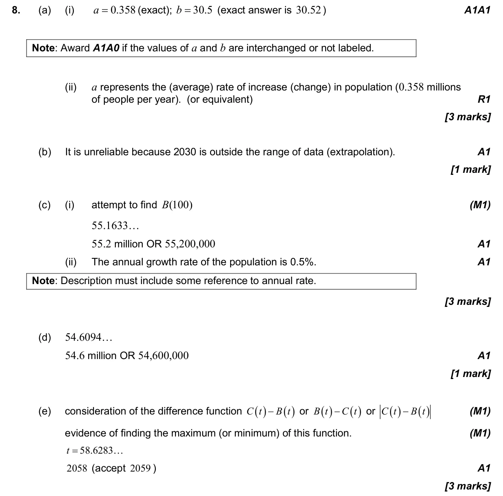
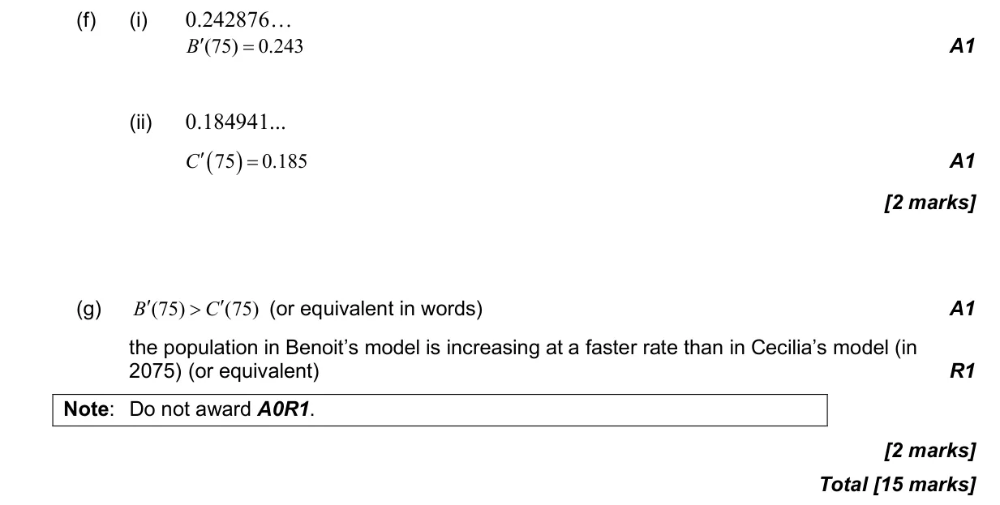

Appears in AA SL P2 Q8AA HL P2 Q10
2.9 Exponential and logarithmic functions4.4 Pearson's, scatter diagrams and equation of y on x5.1 Introduction to calculus2.4 Key features of graphs
Question


Markscheme

